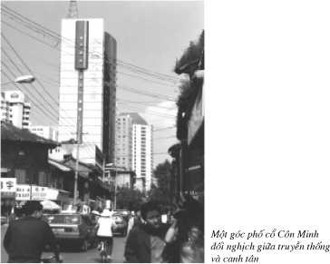
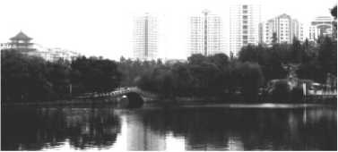

TƯỜNG TRÌNH TỪ VÂN NAM ĐẾN VỚI CON ĐẬP MẠN LOAN
Everybody Lives Downstream
Mọi người đều sống dưới nguồn
(World Water Day 03-22-1999)
Vào Trung Quốc đã trở thành dễ dàng trong những năm gần đây, và càng dễ dàng hơn nếu du lịch theo nhóm có hướng dẫn với lộ trình định sẵn. Nhập cảnh Trung Quốc với lý do cá nhân lại là một vấn đề khác. Cho dù là đổi mới, dẫu sao Trung Quốc vẫn còn là xứ sở của toàn trị và công an, rất kỵ với nhà báo, nhà văn hay bất cứ nghề nghiệp nào liên quan tới truyền thông và kể cả các tu sĩ truyền giáo.
Cho dù chủ đích là một chuyến du khảo / fieldtrip về khúc thượng nguồn con sông Mekong và các con đập Vân Nam nhưng chọn lựa dễ dàng nhất vẫn là lý do du lịch và nghề nghiệp thì chắc chắn không phải là nhà báo. Tôi cũng hiểu rằng nếu phải ghi lộ trình chi tiết thì cũng nên tránh nhắc tới địa danh rất “nhậy cảm” như Tây Tạng.
Đặt chân vào Trung Quốc, trở ngại trước mắt là hàng rào ngôn ngữ. Từ 4 tháng trước, qua giới thiệu của anh Trần Huy Bích với anh Trương Khánh Tạo ở Oklahoma, tôi đã được anh Tạo sốt sắng giới thiệu với anh Hoàng Cương người bạn thân thiết hoạt động cách mạng còn kẹt lại Côn Minh từ năm 1946. Hơn nửa thế kỷ sống ở Vân Nam, thông thạo tiếng Trung Hoa, anh Cương sẵn sàng giúp khi tôi qua vào tháng 9. Nhưng gần tới ngày đi thì được tin anh Cương vì lý do riêng phải về Việt Nam và sẽ không có mặt ở Vân Nam. Không dễ dàng để thay đổi lịch làm việc ở bệnh viện, tôi vẫn phải thực hiện chuyến đi theo dự định, với thái độ sẽ “phản ứng theo hoàn cảnh”. Cũng nghĩ rằng với các hàng rào ngôn ngữ ấy, tôi vẫn thực hiện các chuyến đi Lào và Cam Bốt như ý muốn.
Trước chuyến đi, thật là xúc cảm khi được tin anh Trương Khánh Tạo đã không còn nữa. Rất riêng tư, những dòng chữ viết về chuyến đi Vân Nam này xin được gửi tới anh Trương Khánh Tạo và gia đình Anh như một tỏ lòng tưởng nhớ.
CÔN MINH NGÀY NAY
Bằng chuyến bay của China Southern từ Los Angeles ghé Quảng Châu, vốn đã là một thành phố lớn và hiện đại trong số các tỉnh miền nam của Trung Quốc, từ đây phải đổi máy bay để tới Côn Minh, thủ phủ của Vân Nam.
Trung Quốc là một đất nước vĩ đại được hiểu theo nhiều ý nghĩa. Chỉ riêng tỉnh Vân Nam cũng đã lớn hơn Việt Nam, diện tích 394,000 km2 dân số chỉ có 35 triệu (so với Việt Nam 340,000 km2, dân số đông hơn gấp đôi).
Từ cửa máy bay nhìn xuống, Côn Minh mang vóc dáng của một thành phố lớn Âu Mỹ.
Chẳng còn đâu cái hình ảnh Côn Minh như “một thị trấn Đông Phương hẻo lánh im ngủ” như ghi nhận của viên tướng không quân huyền thoại Claire Chennault của phi đoàn Flying Tigers từng trú đóng ở đây hồi Thế chiến thứ Hai.
Phải từng được sống ở một Côn Minh cũ, trở lại thăm mới thấy được sự đổi thay toàn diện và triệt để như thế nào:
“Côn Minh nơi chúng tôi đã ở đó 50 năm về trước, ngày nay đã hoàn toàn đổi khác, nhà cửa, phố xá hẹp cũ đã không còn nữa thay thế bằng những tòa lâu đài đồ sộ và đường xá rộng thênh thang, có đường riêng cho người đi bộ, đường riêng cho người đi xe đạp và nhiều cây cầu lớn bắc ngang qua đường, dưới cầu có đường hầm cho khách bộ hành qua đường và biến thành khu chợ to lớn dưới hầm.


Thủy điện từ con đập Mạn Loan đang thắp sáng cả Côn Minh như một Little Chicago của Vân Nam

Cổng vào trường Đại học cổ kính Vân Nam, cố phủ Côn Minh

Mỗi khi vào trường mọi người phải leo lên 99 bậc thang đá, cảnh trí vẫn như mô tả trong hồi ký gia đình uNgưyễn Tường Bách và tôi' của Hứa Bảo Liên


Có thể nói thành phố Côn Minh 50 năm về trước đã bị san bằng để xây dựng một thành phố tân kỳ kiểu Âu Mỹ khiến ngày đầu tiên đến Côn Minh, khi chưa tìm được bạn cũ, tôi không tìm ra được những nơi trước đây tôi có nhiều liên hệ. Khí hậu Côn Minh ôn hòa, suốt năm không nóng không lạnh quá. Tôi nhớ lại hồi xưa anh Tam (Nhất Linh) đã nói với tôi rằng: nếu được về hưu, anh sẽ chọn Côn Minh thay vì Đà Lạt.”

Đó là cảm tưởng của anh Trương Khánh Tạo khi trở lại thăm Côn Minh. Sự thực thì sự đổi thay mau chóng ấy mới chỉ trong vòng một thập niên gần đây thôi, từ ngày có nguồn thủy điện dồi dào của con đập Manwan. Người tài xế đã nói với tôi như vậy.
Wu là người Vân Nam đầu tiên tôi tiếp xúc, 28 tuổi một thanh niên khỏe mạnh, là tài xế đón khách ở phi trường, nói tiếng Anh lưu loát và có vẻ hiểu biết, đưa tôi từ phi trường về Holiday Inn Côn Minh, một khách sạn mới 4 sao 242 buồng theo tiêu chuẩn Mỹ. Nơi mà tôi hy vọng không phải gặp ngay trở ngại ngôn ngữ và cũng từ đây có thể tìm ra một người tài xế của một Travel Agency biết chút ít tiếng Anh.
Ở cao độ 2,000 mét trên mặt biển, từ một Côn Minh cũ kỹ, bụi bặm và cả rác rưởi thì nay là một Côn Minh rất khác như anh đã thấy. Wu nói với chúng tôi. Trên đường về khách sạn, vào bên trong thành phố, nếu không còn nhiều xe đạp, thì đó là hình ảnh một thành phố hiện đại như ở Mỹ. Đường rộng và đẹp với những vồng hoa tươi đủ màu. Sự sạch sẽ trên các đường phố là điều đáng ngạc nhiên.
Wu hãnh diện giải thích. Chính người dân Côn Minh tự thấy rằng đây là thành phố của họ, nên họ yêu mến muốn giữ gìn và làm đẹp cho nó.
Đủ ăn đủ mặc cho 1.2 tỉ người có lẽ là một giai đoạn đã vượt qua. Đó là cảm tưởng tôi có được sau những ngày ở Vân Nam. Không thấy bóng dáng hành khất. Rải rác trên đường phố là hình ảnh các công nhân vệ sinh khỏe mạnh trong đồng phục bảo hộ lao động, họ vẫn dùng chổi quét và kẹp nhặt từng cọng rác. Những ngày sau này, cũng hình ảnh những công nhân quét đường ấy thấp thoáng trên những khúc xa lộ mới rất xa thành phố nhưng luôn luôn được giữ sạch tới láng nhãy.
Chỉ qua những trao đổi ngắn trên đường đi, tôi đã có quyết định rất nhanh là chọn Wu và chiếc xe Mitsubishi của anh ta cho những ngày ở Côn Minh. Ngay suốt nửa ngày còn lại hôm đó, Wu đưa chúng tôi đi thăm thủ phủ Côn Minh, thăm cả một vài góc phố hiếm hoi của một Côn Minh cũ với những căn nhà mái cong mang nhiều dấu vết rêu phong của thời gian. Không xóa hết, có lẽ đây là phần người ta còn muốn giữ lại như một tương phản giữa truyền thống và canh tân.
Tới thăm Đại Học Vân Nam, cảnh trí vẫn y như vậy, giống như mô tả trong hồi ký gia đình, “Nguyễn Tường Bách và Tôi” của Hứa Bảo Liên: “ Đây là một trường đại học lớn nhất của tỉnh này, chiếm cả một ngọn đồi lớn. Trên đồi toàn là những cây thông cây bách cao lớn, những con sóc nhảy từ cây nọ sang cây kia nhanh như cắt. Mỗi khi vào trường mọi người phải leo lên 99 bậc thang đá. Trong trường có nhiều kiến trúc đẹp và kiên cố toàn dùng những miếng gạch đỏ xây thành.”
Vẫn có đó những bước nhảy chân sóc nhanh như cắt ấy, vậy mà đã hơn nửa thế kỷ bão táp đã qua đi của một thời kỳ cách mạng Việt Nam với những tháng ngày bôn ba của những tên tuổi như Nhất Linh, Hoàng Đạo, Nguyễn Tường Bách.
Nhưng sự nguyên vẹn của đại học Vân Nam cũng chẳng còn tồn tại được bao lâu nữa vì trước mắt, những tòa nhà cổ xưa từ mấy trăm năm cũng đang từng phần bị phá đi để thay thế bằng những công trình kiến trúc hiện đại.
Thời gian của chuyến đi Vân Nam thì hạn hẹp, với mục đích rõ ràng là đến với khúc thượng nguồn con sông Lan Thương (Lancang Jiang tên Trung Hoa của con sông Mekong), tôi tiếp tục tìm hiểu xem chính Wu hay các mối liên hệ của anh ta có giúp tôi được gì không trong thực hiện mục đích chuyến đi này.
Qua câu chuyện trao đổi, được biết thêm về Wu, người gốc Hán tốt nghiệp đại học 4 năm, là giáo viên dạy toán, một vợ một con nhưng lương ít. Với cơ hội của một Trung Quốc mở cửa, Wu bỏ nghề giáo chuyển sang nghề lái taxi, lại có vốn liếng tiếng Anh nên có thể đồng thời hướng dẫn khách du lịch. Lương nay đã tăng gấp 6 lần so với nghề nhà giáo, khoảng 600 đôla / tháng, có thể mua nhà trả góp thay vì thuê và sẽ hoàn toàn sở hữu căn nhà sau 20 năm.
Wu tự tin, bày tỏ mạnh dạn về các vấn đề chánh trị và xã hội của Trung Quốc. Chẳng hạn: Đài Loan dứt khoát là một tỉnh của Trung Quốc, không còn gì để phải tranh cãi. Mao Trạch Đông thì vẫn được kính trọng. Đặng Tiểu Bình được nhân dân Trung Quốc biết ơn vì mở ra một thời kỳ phát triển và thịnh vượng cho nước Trung Hoa. Thế còn chủ tịch Giang Trạch Dân? Cũng vậy thôi, ông ta quá mềm yếu / too soft nhất là với Mỹ khiến nhân dân Trung Quốc giận dữ. Như vụ để cho máy bay Mỹ đáp xuống đảo Hải Nam thay vì phải bắn rơi. Dẫu sao, bù lại Trung Quốc biết được thêm nhiều về kỹ thuật hàng không do thám của Mỹ.
Không quá ngây thơ để không nghĩ rằng những tài xế taxi hay hướng dẫn du lịch lại chẳng liên hệ gì tới công an, do đó tôi chỉ đưa ra những câu hỏi hồn nhiên chứ dứt khoát không để mở ra cuộc tranh luận.
Bữa ăn tối hôm đó Wu đưa chúng tôi tới một nhà hàng nổi tiếng về món “Bún Qua Cầu”, đơn giản chỉ là một tô nước dùng nóng sôi ngậy một lớp mỡ, khi ăn thì thả bún và những lát thịt thái mỏng vào, thêm một muỗng ớt đỏ, giống như món lẩu nhưng không có một bếp lò trước mặt. Đó là một bữa ăn nóng theo đủ cả ý nghĩa của chữ ấy. Các cô tiếp viên gốc Hán nhưng lại mặc theo trang phục rực rỡ của sắc tộc Di. Khách tới thăm Vân Nam không thể không nghe cái giai thoại thơ mộng và được giới thiệu đến với món ăn này.
Vào đời nhà Thanh, có chàng hàn sĩ quyết tâm đèn sách để chờ ngày về kinh đô dự thi. Chàng rời gia đình, dọn ra một hòn đảo nhỏ trên hồ để tập trung vào việc học. Hàng ngày, người vợ trẻ từ nhà phải vượt một cây cầu tre dài qua tận bên đảo đem bữa ăn đến cho chồng nhưng tới nơi thì thức ăn đã nguội lạnh. Tình cờ một hôm người vợ khám phá ra rằng nếu như có đổ một lớp mỡ dầy trên tô canh từ nhà thì vẫn giữ được thức ăn nóng cho tới khi gặp chồng. Tuy được giới thiệu là “ngon tuyệt” nhưng chúng tôi không thể nào theo kịp Wu để có thể dứt điểm một “tô xe lửa ngậy mỡ động vật” như vậy. Nhiều dầu mỡ và cay nóng là đặc tính của các món ăn Vân Nam.
Đêm hôm đó cũng là đêm đầu tiên ở Vân Nam, nhìn ra từ tầng lầu 9 của khách sạn Holiday Inn, trước mắt là cả một “Côn Minh rực sáng” dĩ nhiên với nguồn điện từ con đập Manwan, đập thủy điện đầu tiên trong chuỗi 14 con đập bậc thềm trên khúc thượng nguồn con sông Mekong. Côn Minh ngày nay như biểu tượng phát triển của Vân Nam, nhưng bằng cái giá nào phải trả cho cư dân nơi Đồng Bằng Sông Cửu Long và các quốc gia hạ nguồn thì vẫn còn là một ẩn số.
RỪNG ĐÁ VẠN CỔ
126 km theo quốc lộ 320 hướng đông nam, hai bên đường mướt một màu xanh với những vườn cây trái, với cả những con lạch nhỏ và suối. Đủ loại trái cây tươi mới hái từ trong vườn ra, còn dính theo cả lá cành được bầy ra ven lộ bán cho du khách: những trái lê, đào, hồng giòn, măng cụt. Đất Vân Nam nổi tiếng về cây trái: đào Vân Nam có tiếng là thơm ngọt, tôi chưa bao giờ thấy được những trái lê bát lớn và đẹp đến như vậy với lớp vỏ xanh mượt mà. Đây sẽ là món quà thật quý từ Vân Nam nhưng trái cây lại là thứ quốc cấm không được phép đem vào Mỹ. Wu bảo đất ở cao nguyên Vân Nam tốt cho cây trái nhưng lại không tốt cho lúa nên muốn có gạo ngon thì phải nhập từ Thái Lan.
Đường xe lửa cũ từ Côn Minh xuống tới Hà Nội Hải Phòng làm từ thời Pháp (1904-1910) nay được thay thế bằng hệ thống đường rày mới.
Song song với quốc lộ lúc nào cũng hai chiều tấp nập những xe vận tải lớn Dong Feng / Gió Đông chế tạo tại Trung Quốc. Từ thủ phủ Côn Minh về hướng đông đi Thượng Hải, người ta đang làm thêm một công trình cầu đường với xa lộ 8 lanes để đáp ứng nhu cầu giao thông và nổ bùng kinh tế của Côn Minh. Cách khoảng hai bên đường, là những trạm xăng của Petro-China rộng thênh thang có từ 20 tới 30 cây xăng mỗi trạm. Liệu có bao nhiêu thùng dầu ấy có gốc gác từ những túi dầu Biển Đông quanh các quần đảo Hoàng Sa và Trường Sa. China Telecom và China Mobile là hai công ty khổng lồ đang cạnh tranh cung ứng điện thoại di động được sử dụng tràn ngập bởi 1.2 tỉ người dân Trung Quốc.
Khu Rừng Đá, cùng tuổi với rặng Hy Mã lạp Sơn, và cả vùng cao nguyên Tây Tạng (cao nguyên Tây Tạng là nơi phát xuất các con sông lớn như mạch sống cho toàn vùng châu Á trong đó có con sông Mekong ). Có cùng một lịch sử địa chất, khoảng 300 triệu năm trước do va chạm của hai khối tiền lục địa tạo nên các cơn địa chấn với sức ép khổng lồ dồn lên phía bắc tạo nên một địa hình mới nổi bật với sự hình thành dãy Hy Mã Lạp Sơn và cả vùng cao nguyên Trung Á. Khu Rừng Đá rộng 80 mẫu tây như một kỳ quan của tỉnh Vân Nam. Nguyên là một vùng đáy biển bị dồn lên cao, nước biển rút ra để trơ lại một vùng núi nham thạch bị nước, gió và thời gian xói mòn tạo nên một địa hình kỳ lạ với vô số những chỏm đá cao và những rãnh cắt ngang. Rừng thay vì cây xanh nhưng lại là những cây đá chi chít với đủ hình dạng gợi trí tưởng tượng phong phú của người dân Vân Nam với những tên gọi thơ mộng: vũng gươm, voi con, nấm bất tử.
Vân Nam xứ sở của những giai thoại. Tới với Rừng Đá không thể không được nghe kể câu chuyện về một chàng trai tuấn tú tên Ahei vào trong khu Rừng Đá để tìm cách giải thoát cô gái trẻ đẹp Ashima đang bị giam cầm. Nhưng tên phù thủy độc ác đã tạo nên một con lũ cuốn Ashima băng ra khỏi hang đá, và từ đó Ashima vĩnh viễn xa Ahei nhưng linh hồn nàng thì vẫn trở về với Thạch Lâm như một âm thanh vang vọng. Một mình đi vào khu rừng đá là như lạc vào một mê lộ không dễ mà tìm ra lối về.
Vào mùa này, du khách đa số là người Hoa. Cuộc sống bắt đầu sung túc họ có nhu cầu du lịch, đi thăm một đất nước mênh mông với bao nhiêu là danh lam thắng cảnh, mà chưa cần phải khó khăn xin visa đi du lịch nước ngoài. Mỗi toán chừng 20 người đi theo một cô hướng dẫn tay cầm một cây cờ màu để nhận diện. Toán chúng tôi chỉ có 3 và Wu thì đã quá quen thuộc với từng đường đi nước bước trong khu rừng đá như với đường chỉ tay của chính mình.
Tràn ngập quanh khu Rừng Đá là các cô sinh viên gốc Hán má phấn môi son, bận trang phục đầy màu sắc của sắc tộc Di, sẵn sàng làm người mẫu đứng chụp hình với du khách hay làm người hướng dẫn.
Thương mại hóa cao độ các tụ điểm du lịch là một hiện tượng thấy được ở khắp nơi từ khu đền đài Angkor Siem Reap tới Rừng Đá Shilin Vân Nam. Màn trình diễn high-tech “âm thanh và ánh sáng” thật hoành tráng bên hồ sen bên ngoài khu rừng đá mỗi đêm kết hợp với kỹ thuật tia laser diễn lại truyền thuyết nàng Ashima được kể là một show rất ăn khách nhưng chúng tôi không có nhiều thời gian ở lại qua đêm chỉ để xem một màn show như thế.
Trên đường trở lại Côn Minh cùng ngày, tôi bảo đùa Wu là hướng dẫn đoàn du khách mà quên không mang theo một cây “hồng kỳ” và cũng hỏi Wu có biết hát bài “Đông Phương Hồng”. Không chờ được yêu cầu, Wu hát giọng rất mạnh và nồng nàn, gợi nhớ tới các đoàn “Hồng Vệ Binh” của thập niên 60, nhưng lúc đó thì Wu chưa được sinh ra.
Qua hai ngày tiếp xúc và thử thách, Wu chứng tỏ rất có khả năng và có thể tin cậy được. Tôi trở lại hỏi Wu về nguồn điện của thủ phủ Côn Minh, về con đập Manwan. Wu cũng chỉ được biết Manwan như một địa danh cách Côn Minh khoảng 500 km về hướng nam, giữa con đường đi xuống Cảnh Hồng. Đường núi có vài đoạn hư xấu chưa được sửa chữa nhưng vẫn có thể đi được nếu thời tiết không mưa bão.
Với chiếc Mitsubishi chỉ có 4 máy đã chạy hơn 100 ngàn miles, tôi hỏi Wu làm cách nào thuê được một chiếc xe giống như loại xe Jeep có thể leo núi thì hắn trả lời vẻ tự tin: chiếc xe tuy cũ nhưng lại tốt hơn cả các loại xe mới hiện nay và dư sức để chạy gấp 2 chặng đường tới Manwan chỉ cần đổ đủ xăng nhớt.
Chừng đó đủ cho tôi quyết định ngay sáng sớm ngày mai, chúng tôi sẽ khởi hành đi Manwan.